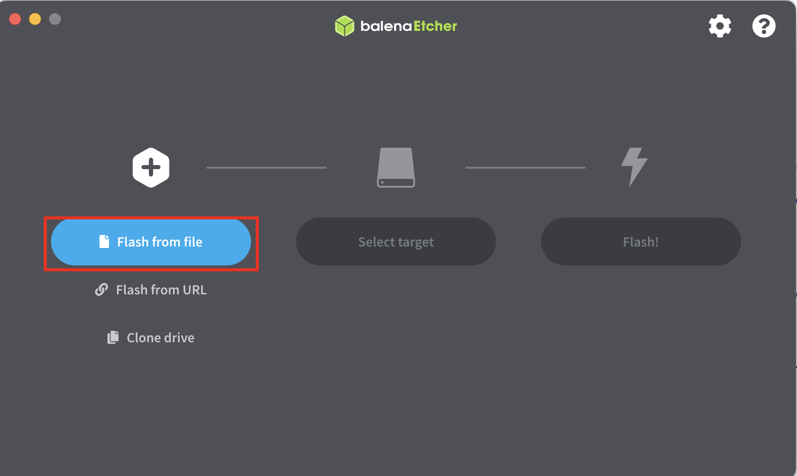
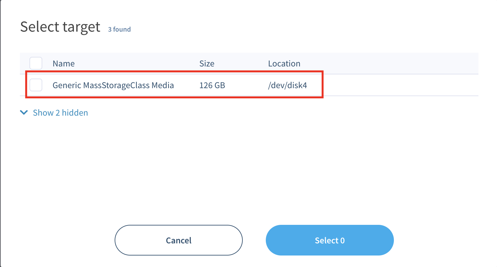
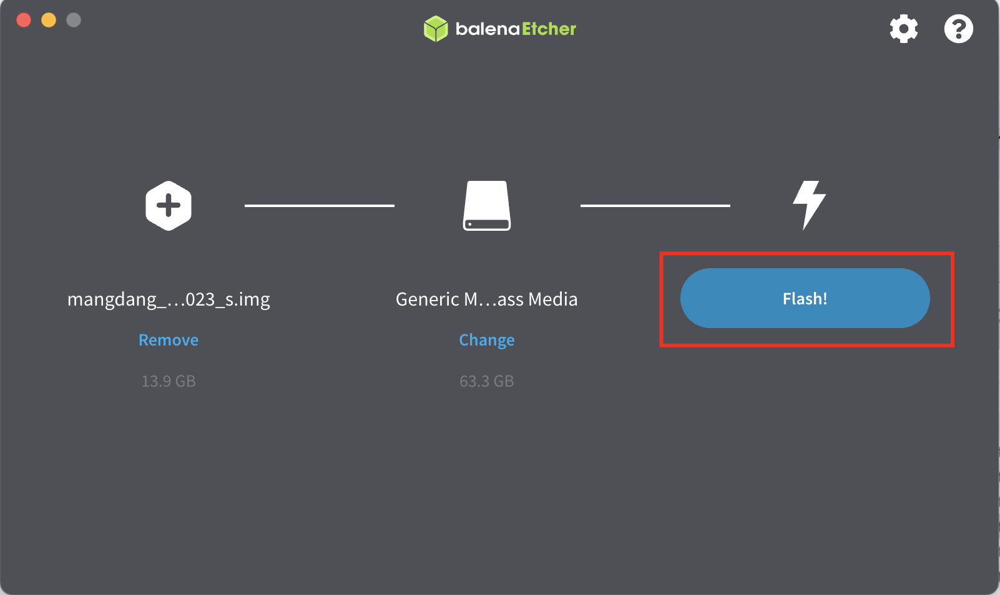
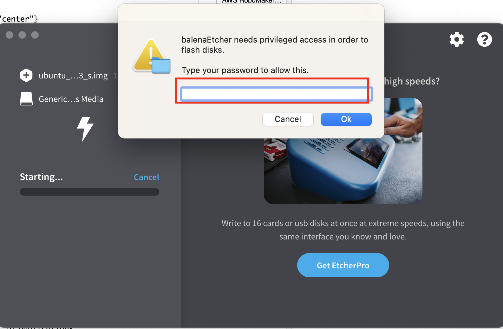
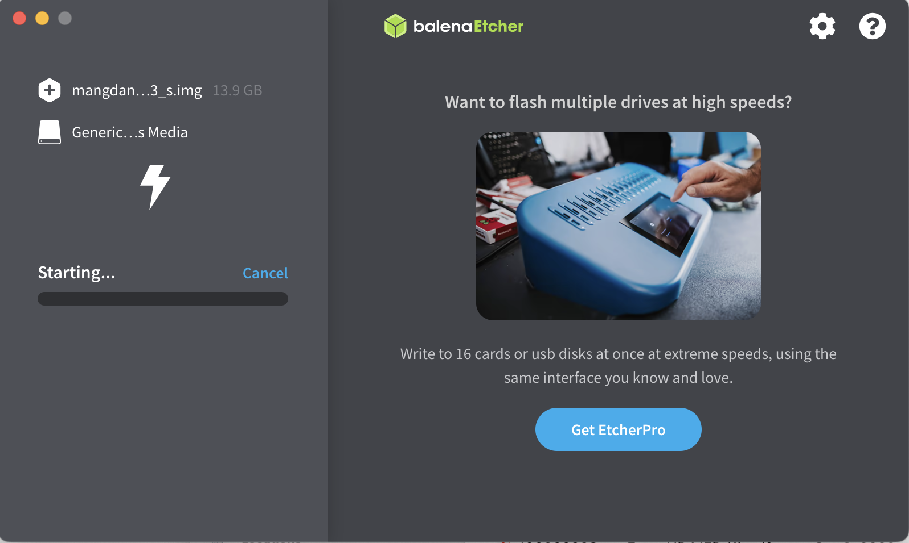
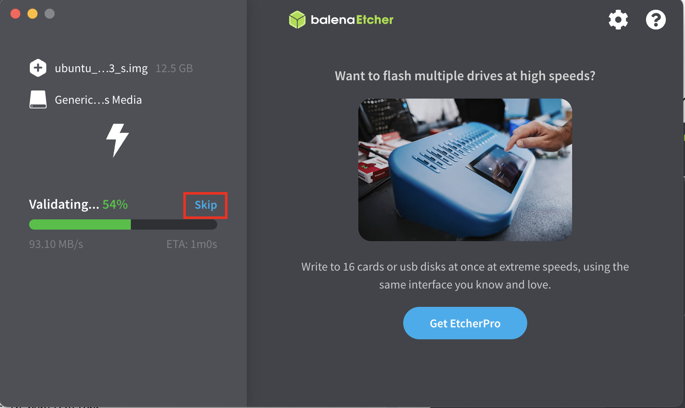
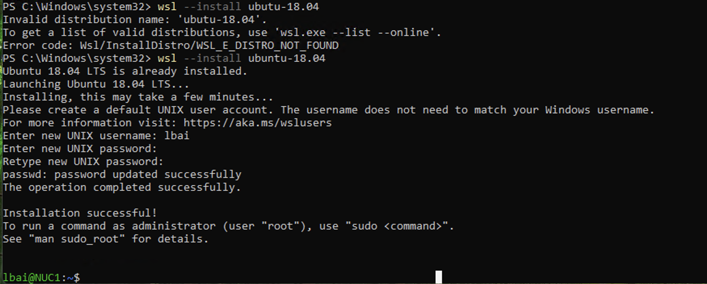
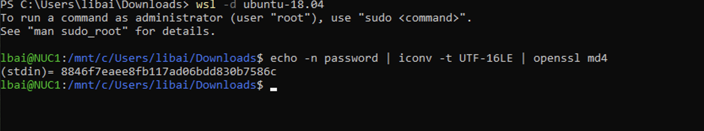
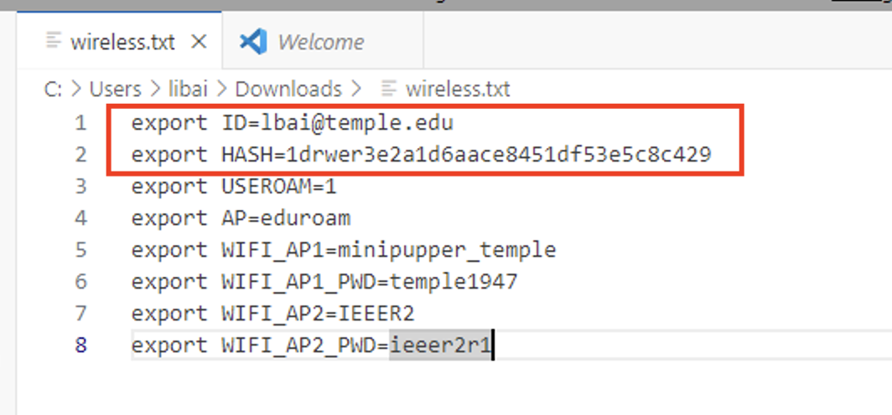

Robot Control using Raspberry Pi
Workshop - A minimal introduction to Minipupper V2
Li Bai ![]()
Temple University
April 6, 2024
Setup Raspberry Pi - Balena Etcher (preflashed)
- Download Balena Etcher https://etcher.balena.io/ to copy the new image to your MicroSD card




- Check to ensure your SD card is selected to flash to SDHC, NOT your computer!

NOTE: the following step will not apply to you if you own a computer using Windows





Mobile Hostpot on Windows 11 - method 1
Wireless router - method 2
Generate your Password Hash
- Now we open a new power shell terminal to setup another wsl distro

- replace “password” in command line with your password used to log in to school organization email
- enter to regenerate unique hash

- save value for your WiFi access (in google doc or notebook)!
- Line 1: use your school email address
- Line 2: use the hash passcode that you previously saved in a document or notebook

- make sure you see a new driver system-boot

Revise the WiFi in Jupyter Lab

Demo (line following)
- ensure your computer and laptop on the router network
- make sure your camera works
- check image_raw toic
- if image_raw exists, run the following